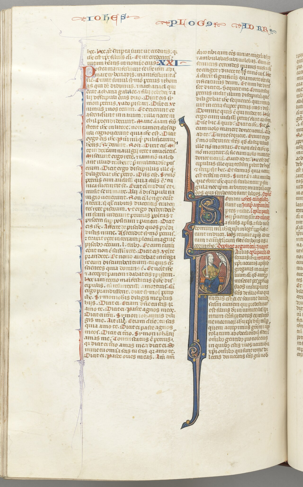

Hay dos palabras griegas de las que depende buena parte de la historia del cristianismo occidental. Son ἐφ᾿ ᾧ, están al final de Romanos 5:12, y llevan dieciocho siglos discutiéndose.
La versión popular de este asunto dice que el pecado original nació de una mala traducción de esas dos palabras. Y es una simplificación con un núcleo verdadero, que es la peor clase de afirmación: la que no se puede repetir tal cual ni descartar sin más. Lo que hay debajo es mejor.
La frase que Pablo no terminó
Empecemos por el texto, en traducción lo más neutra posible: «Por esto, como por medio de un solo hombre el pecado entró en el mundo, y por medio del pecado la muerte, y así la muerte alcanzó a todos los hombres, ἐφ᾿ ᾧ todos pecaron —».
El guion final no es un adorno. El versículo es un anacoluto: Pablo abre una comparación con hōsper, «como», y no la cierra nunca. La segunda mitad de la frase —el «así también» que uno espera— no llega, y el tema se retoma seis versículos más abajo. Cualquier lectura de esas dos palabras se hace, por tanto, sobre una frase gramaticalmente inacabada.
Eso explica de entrada por qué el pasaje es un crux interpretum desde la Antigüedad. No es que los lectores fueran torpes: es que la frase no está terminada.

Cinco maneras de leer dos palabras
ἐφ᾿ ᾧ es la preposición epí con el dativo del pronombre relativo. Y ese relativo es masculino o neutro —nunca femenino—, dato que va a resultar decisivo. Las opciones que la crítica discute son cinco.
Puede tener valor causal: «porque todos pecaron». Es la lectura mayoritaria hoy entre los helenistas del Nuevo Testamento, y la que traen las traducciones críticas modernas. Puede tener valor consecutivo: «con el resultado de que todos pecaron». Es la tesis que defendió Joseph Fitzmyer en un artículo de New Testament Studies de 1993; minoritaria, pero seria. Puede tener valor restrictivo: «en la medida en que». Puede ser un relativo con antecedente, y entonces hay que preguntarse cuál.
Y puede ser lo que la tradición latina leyó: «en quien todos pecaron», con Adán como antecedente. Esta última es insostenible en griego, y por dos razones que no dependen una de otra. La primera es de preposición: «en quien» exigiría ἐν ᾧ, y el texto dice ἐφ᾿ ᾧ; son giros distintos. La segunda es de distancia: «un solo hombre» está a diez palabras y dos cláusulas de allí, y entre los dos se interpone «la muerte».
Lo cual conduce al punto interesante, porque «la muerte» —ho thánatos— es masculino en griego. Es decir: el griego permite leer «la muerte, a causa de la cual todos pecaron». Y es exactamente lo que leyeron los padres griegos.
Cuatro lenguas, un pronombre
Romanos 5:12 termina con un pronombre relativo, y de qué sea su antecedente depende buena parte de la historia del cristianismo occidental. Cambia de lengua y observa la lista de candidatos: lo que decide qué lecturas son posibles no es el traductor, es la gramática de la lengua de llegada.
El versículo está gramaticalmente inacabado. Pablo abre una comparación con ὥσπερ, «como», y no la cierra nunca: la segunda mitad de la frase no llega, y el tema se retoma seis versículos más tarde. Cualquier lectura del pronombre se hace, por tanto, sobre un anacoluto.
Eso explica por qué el pasaje es, desde hace siglos, un crux interpretum: no es que los lectores fueran torpes. Es que la frase no está terminada.
«Porque como por la desobediencia de un solo hombre los muchos fueron constituidos pecadores, así también por la obediencia de uno los muchos serán constituidos justos.»
Porque sin ella la pieza sería un truco. Se repite mucho que el pecado original «nació de una mala traducción», y esa frase es una simplificación con núcleo verdadero: la ambigüedad del pronombre y su resolución latina importan, y mucho.
Pero la doctrina no cuelga de dos palabras. Seis versículos más abajo, en griego indiscutido y sin ningún pronombre que interpretar, Pablo dice que por la transgresión de uno vino condenación para todos. Quien reduzca todo el asunto a un error de traducción no podrá explicar los versículos 18 y 19, y tendrá que dar marcha atrás en cuanto alguien los cite.
Lo que el aparato de la izquierda muestra no es que la doctrina sea un malentendido. Es algo más fino: que una de las lecturas posibles quedó cerrada por el género de una palabra, y que la tradición latina construyó sobre la que quedó.
El latín no se equivocó: decidió
Ahora, tres precisiones que casi nunca se hacen juntas.
La primera: in quo está en la Vulgata. Hay que decirlo sin rodeos, porque circula una versión del relato según la cual fue un desliz de Ambrosiaster que la Vulgata luego corrigió. No es así: «in omnes homines mors pertransiit, in quo omnes peccaverunt» es el texto de la Vulgata, y también el del latín antiguo que circulaba en el siglo IV.
La segunda: no es un error de bulto. Epí con dativo se vierte al latín con in y ablativo de manera perfectamente rutinaria. In quo es una rendición literal, palabra por palabra, del giro griego. El problema no es que sea absurda: es que en latín resulta más ambigua que en griego, y esa ambigüedad se resolvió en una sola dirección.
Y la tercera es el mecanismo, que es el hallazgo de esta entrega. En latín, mors es femenino. In quo, que es masculino o neutro, no puede referirse a ella: tendría que decir in qua. La opción que el griego dejaba abierta —y que los padres griegos habían tomado— queda cerrada por el género gramatical de una palabra latina. Y el único antecedente masculino que queda disponible en la frase es unum hominem: Adán.
Conviene añadir en seguida lo que matiza el hallazgo, porque si no se convierte en un truco: peccatum, «el pecado», es neutro, y el relativo admite el neutro. La frase latina podía leerse «en el cual [pecado] todos pecaron». Esa puerta quedó abierta y la tradición no la atravesó. El latín no obligó a leer «en Adán»: hizo que fuera la lectura más natural entre las que quedaban, y entre una persona y una abstracción, la lectura eligió la persona.

Y una ironía sobre quién puso ese texto ahí
Jerónimo no tradujo Romanos. Su intervención en el Nuevo Testamento latino se limitó a los evangelios; el resto lo heredó de la tradición previa. ¿Quién estuvo detrás del texto latino de las cartas de Pablo? No se sabe con certeza, y entre los candidatos que se han propuesto figuran Rufino el Sirio y Pelagio mismo. El indicio que fija la fecha máxima es que Pelagio ya cita ese texto, de modo que existía antes del 410.
Dicho de otro modo: el texto latino sobre el que Agustín construyó el pecado original pudo haber sido transmitido por el círculo de su gran adversario. No hay que hacer de esto más de lo que es —es una cuestión de historia textual, no una ironía cósmica—, pero conviene saberlo.
Sobre Ambrosiaster hay que ser igual de escrupuloso. Se lee con frecuencia, y lo dice la Wikipedia inglesa, que fue «el primero en introducir» la traducción in quo. Eso no es verificable. Su comentario es uno de nuestros testimonios principales del texto latino de Pablo anterior a la Vulgata: comenta el texto que tenía delante, y no hay evidencia de que lo fabricara. La formulación defendible es más modesta y más exacta: in quo está atestiguado en el latín del siglo IV y pasó a la Vulgata, y Ambrosiaster es el primer autor conocido que construye sobre él una argumentación de pecado transmitido.
El siríaco, testigo independiente
Hay una confirmación que llega de donde nadie la busca, y es elegante porque es completamente independiente del debate latino.
La Peshitta, la versión siríaca, construye el pasaje con un relativo femenino. Y un relativo femenino no puede referirse a Adán. Andrew Koperski, tras corregir su propia lectura con la ayuda de un semitista, concluye que la construcción funciona como «en cuanto que», «por el hecho de que»: es decir, el siríaco excluye la lectura adánica de raíz y resuelve la ambigüedad en la dirección contraria al latín, coincidiendo con la lectura mayoritaria de los helenistas.
Tres lenguas antiguas, tres resultados. El griego deja dos puertas abiertas. El siríaco cierra la de Adán. El latín cierra la de la muerte. Y la doctrina occidental se construyó sobre la única que el latín dejó a mano.

Cómo lo leyeron los griegos
Lo anterior no es una reconstrucción hipotética: se puede comprobar en lo que hizo el Oriente cristiano con el mismo versículo.
Los padres griegos —Juan Crisóstomo entre ellos— leyeron el pasaje sin derivar de él una doctrina de culpa heredada. Tenían delante el mismo texto de Pablo, en su propia lengua, sin intermediación de traducción alguna. Y con «la muerte» disponible como antecedente masculino, el versículo les decía algo distinto: que la muerte entró en el mundo y que, en el ámbito de la muerte, todos pecaron. Efecto universal, sí; imputación de culpa a los recién nacidos, no.
Es el dato que hace falta para que el argumento de esta entrega no sea un juego de palabras. No estamos comparando el texto con una reconstrucción moderna: lo estamos comparando con lo que hicieron durante siglos los lectores que no necesitaban traducirlo.
El relativo es masculino o neutro. «La muerte» es masculino y está justo al lado; Adán está a diez palabras y exigiría otra preposición. Y cabe además el valor causal, que es la lectura mayoritaria hoy.
Mors es femenino: in quo no puede ser la muerte. Queda peccatum, que es neutro y estaba disponible, y queda Adán. Se impuso Adán.
Relativo femenino, que excluye a Adán por completo. La construcción funciona como «en cuanto que»: coincide con los helenistas y contradice al latín.
Leyeron el mismo versículo en su propia lengua, sin traducir nada, y no derivaron de él una culpa heredada. Es lo que impide tratar todo esto como una especulación moderna.
Y aun así: los versículos 18 y 19
Aquí es donde este artículo tiene que hacer algo que la divulgación sobre el asunto casi nunca hace, que es desactivar su propia conclusión favorita.
Seis versículos más abajo, sin pronombre ambiguo, sin problema de concordancia y sin discusión textual, Pablo escribe que por la transgresión de uno vino la condenación a todos los hombres, y que por la desobediencia de un solo hombre los muchos fueron constituidos pecadores. Está en griego indiscutido. No depende de ninguna preposición.
De modo que la doctrina no cuelga de dos palabras. Quien reduzca todo el asunto a un error de traducción tendrá que dar marcha atrás en cuanto alguien le cite los versículos 18 y 19, y con razón.
Lo que sí se puede sostener, y es bastante, es esto: en Romanos 5 hay una solidaridad real entre el acto de Adán y la situación de todos —eso está en el texto griego y no se va a ir—; pero el paso de esa solidaridad a una culpa imputada al recién nacido y remitida por un sacramento no está en Pablo. Ese paso se dio en otro sitio, en otra lengua y por otras razones. Y una de esas razones, la más concreta y la menos teológica de todas, es de lo que trata la entrega siguiente: que se estaba bautizando a recién nacidos, y había que explicar de qué.
Es dato firme el texto griego de Romanos 5:12 y su carácter de anacoluto: la comparación abierta con ὥσπερ no se cierra. Lo es que ἐφ᾿ ᾧ es ἐπί con dativo del relativo, masculino o neutro y nunca femenino; que «en quien» exigiría ἐν ᾧ; y que ὁ θάνατος es masculino y es el antecedente más próximo. Lo es que la lectura mayoritaria hoy es la causal, y que Fitzmyer defendió la consecutiva en New Testament Studies 39/3 (1993), 321-339. Lo es que in quo está en la Vulgata y en el latín antiguo del siglo IV; que mors es femenino en latín y por tanto in quo no puede referirse a ella; que peccatum es neutro y sí estaba disponible; que Jerónimo sólo revisó los evangelios; y que la Peshitta usa un relativo femenino, observación de Andrew Koperski.
Debate abierto: entre los valores causal, consecutivo y restrictivo de ἐφ᾿ ᾧ, con Fitzmyer del lado consecutivo y la mayoría del causal. Quién estuvo detrás del texto latino de las cartas de Pablo, donde se han propuesto a Rufino el Sirio y a Pelagio sin que la cuestión esté resuelta. Y una precisión sobre nuestras propias fuentes: la afirmación de que Ambrosiaster «introdujo» in quo, que circula en la Wikipedia inglesa, no es verificable y aquí no se sostiene. La inferencia de que el género de mors cerró una opción de lectura es nuestra, coherente con Meyendorff y con Koperski, y se presenta como inferencia y no como cita. Tampoco damos el número de interpretaciones de ἐφ᾿ ᾧ que se suele atribuir al catálogo de Fitzmyer, porque no lo hemos podido comprobar.
Este artículo no sostiene que el pecado original sea un malentendido, y ha dedicado su último apartado a explicar por qué no puede sostenerlo. Lo que describe es más interesante que eso: cómo una frase inacabada, en tres lenguas con tres gramáticas distintas, ofreció a cada tradición un juego de lecturas diferente, y cómo una de ellas se convirtió en doctrina. Que el latín cerrara una puerta no acusa a nadie de nada: los traductores latinos hicieron lo que hace cualquier traductor honrado, verter literalmente lo que tenían delante. Las consecuencias de una decisión gramatical rutinaria no son culpa de quien la tomó.